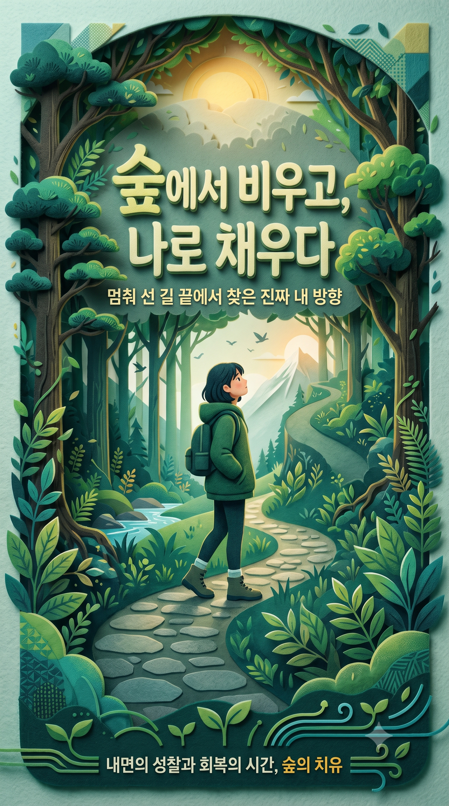

멈춰 선 길 끝에서 찾은 진짜 내 방향 — 조급한 성장의 압박에서 벗어나 따뜻한 숲의 온기 속에서 내면의 호흡과 속도를 되찾는 산림 치유 비주얼 프로젝트.

물성과 질감의 전환: 차갑고 평면적인 디지털 그래픽의 한계를 넘어, 실제로 만져질 듯 포근한 '3D 니들펠트(Needle Felt) 및 펠트 페이퍼 크래프트 질감'을 포스터 전반에 차용했습니다. 부드러운 섬유 결의 질감은 불안과 번아웃을 겪는 현대인에게 즉각적인 심리적 안정감과 시각적 온기를 제공합니다.
프레임 인 프레임(Frame in Frame) 스토리텔링: 전경을 둘러싼 울창하고 짙은 그린 톤의 숲 프레임은 복잡한 고민과 방황을 대변하며, 굽이치는 돌길을 따라 시선이 닿는 원경의 아침 햇살과 설산은 내면의 확신을 상징합니다. '어둠에서 빛으로, 비움에서 채움으로' 나아가는 치유의 과정을 입체 레이어로 구현했습니다.
정적인 인물 연출: 목표만을 향해 조급히 달리는 현대인의 모습 대신, 길 한가운데 멈춰 서서 높은 나무와 햇살을 응시하는 뒷모습을 배치했습니다. 이는 단순한 멈춤이 아닌 '스스로의 방향성을 찾는 사유의 시간'임을 직관적으로 시각화한 핵심 디테일입니다.
빛이 부드럽게 스며드는 도심 속 힐링 라운지와 심리상담 센터 입구에 배치된 대형 포스터 연출입니다. 깊이감 있는 원목 프레임과 매트한 비반사 글라스를 더해, 포스터의 펠트 공예 질감이 공간 전체에 차분하고 포근한 분위기를 퍼뜨립니다.
퇴근길과 일상의 스트레스에 지친 시민들이 잠시 머무는 도심 정류장 라이트박스에 적용되었습니다. 배면 발광(Backlight) 패널을 통해 원경의 아침 햇살 그래픽이 밤 시간대에 은은하게 발광하여 보행자에게 감성적인 쉼을 제안합니다.
캠페인 참여자들에게 배포되는 셀프 멘탈케어 저널의 하드커버 패키징입니다. 친환경 비도공지(FSC 인증 랑데뷰지)에 포스터의 펠트 결을 살린 에칭 엠보싱(Embossing) 후가공을 적용해 촉각적 만족도를 극대화했습니다.